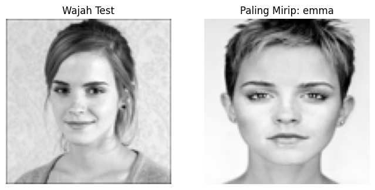
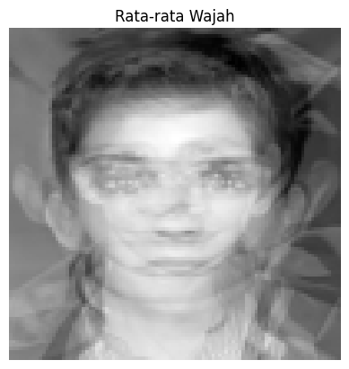
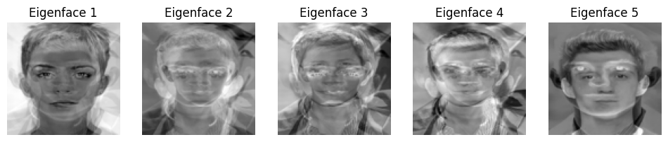

Implementasi Singular Value Decomposition (SVD) pada Face Recognition#
Link Colab:#
https://colab.research.google.com/drive/1F6edBN7u0O6ul64smOhxOpYiO0WzTddb?usp=sharing
Konsep SVD#
SVD digunakan untuk memecah matriks menjadi tiga matriks:
Keterangan:
\(A\) = matriks data wajah
\(U\) = singular vector kiri
\(\Sigma\) = singular value
\(V^T\) = singular vector kanan
Pada program digunakan:
U, S, VT = np.linalg.svd(data_wajah, full_matrices=False)
Representasi Data Wajah#
Setiap gambar wajah diubah menjadi grayscale lalu diubah menjadi vektor.
Jika terdapat beberapa gambar wajah:
Pada program:
Artinya terdapat 6 gambar wajah dengan 10000 nilai pixel.
Eigenvalue dan Eigenvector#
Untuk mencari eigenvalue dan eigenvector digunakan:
atau
Eigenvalue dicari dengan:
Hasilnya:
Setelah itu dicari eigenvector:
atau
Eigenvalue menunjukkan tingkat kepentingan fitur, sedangkan eigenvector menunjukkan arah utama data.
Singular Value#
Singular value diperoleh dari eigenvalue:
Pada program singular value disimpan pada:
S
Matriks U#
Matriks U merupakan singular vector kiri.
Jika:
Maka:
Pada program:
U
Matriks Sigma (Σ)#
Matriks Sigma dibentuk dari singular value:
Pada program:
Sigma = np.diag(S)
Ukuran matriks:
Matriks (V^T)#
Matriks (V^T) merupakan singular vector kanan.
Ukurannya:
Pada program:
VT
Baris-baris pada matriks (V^T) digunakan sebagai fitur utama wajah (eigenfaces).
Reduksi Dimensi#
Reduksi dimensi dilakukan dengan memilih singular value terbesar.
Misalnya:
Jika hanya dipilih dua komponen:
Tujuannya:
mengurangi jumlah fitur
mempercepat komputasi
mempertahankan informasi penting
Face Recognition#
Wajah uji diproyeksikan ke ruang fitur hasil SVD.
Kemudian dibandingkan dengan data training menggunakan Euclidean Distance:
Jarak terkecil menunjukkan wajah yang paling mirip.
Contoh hasil program:
Wajah test paling mirip dengan: Emma
Kesimpulan#
SVD memecah matriks wajah menjadi matriks U, Σ, dan (V^T). Hasil dekomposisi digunakan untuk memperoleh eigenvalue, eigenvector, melakukan reduksi dimensi, dan menentukan wajah yang paling mirip.
# ==================================================
# PROGRAM SVD / EIGENFACES FACE RECOGNITION
# ==================================================
# 1. Upload file dataface.zip dan test.jpg
from google.colab import files
print("Upload dataface.zip dan test.jpg sekaligus")
uploaded = files.upload()
# 2. Import library
import os
import zipfile
import numpy as np
import matplotlib.pyplot as plt
from ipywidgets import interact
import ipywidgets as widgets
from PIL import Image
# 3. Cek file upload
print("\nFile yang ada di Colab:")
print(os.listdir())
if "dataface.zip" not in os.listdir():
raise FileNotFoundError("File dataface.zip belum ada. Upload dulu dataface.zip.")
if "test.jpg" not in os.listdir():
raise FileNotFoundError("File test.jpg belum ada. Upload dulu test.jpg.")
# 4. Extract dataface.zip
with zipfile.ZipFile("dataface.zip", "r") as zip_ref:
zip_ref.extractall()
print("\nSetelah extract:")
print(os.listdir())
# 5. Pengaturan
folder_dataset = "dataface"
file_test = "test.jpg"
ukuran_gambar = (100, 100)
jumlah_komponen = 10
if not os.path.exists(folder_dataset):
raise FileNotFoundError("Folder dataface tidak ditemukan. Pastikan isi ZIP adalah folder dataface.")
# 6. Fungsi membaca gambar
def baca_gambar(path):
gambar = Image.open(path).convert("L")
gambar = gambar.resize(ukuran_gambar)
matriks = np.array(gambar, dtype=np.float64)
vektor = matriks.flatten()
return vektor
# 7. Membaca dataset wajah
data_wajah = []
label_wajah = []
path_wajah = []
for nama_orang in os.listdir(folder_dataset):
folder_orang = os.path.join(folder_dataset, nama_orang)
if os.path.isdir(folder_orang):
for nama_file in os.listdir(folder_orang):
if nama_file.lower().endswith((".jpg", ".jpeg", ".png")):
path = os.path.join(folder_orang, nama_file)
vektor = baca_gambar(path)
data_wajah.append(vektor)
label_wajah.append(nama_orang)
path_wajah.append(path)
data_wajah = np.array(data_wajah)
if data_wajah.shape[0] == 0:
raise ValueError("Dataset kosong. Struktur harus: dataface/NamaOrang/gambar.jpg")
# 8. Info dataset
print("\n=== DATASET WAJAH ===")
print("Jumlah gambar training :", data_wajah.shape[0])
print("Jumlah pixel per gambar:", data_wajah.shape[1])
print("Ukuran matriks A :", data_wajah.shape)
print("Label wajah :", label_wajah)
# 9. Rata-rata wajah
rata_rata_wajah = np.mean(data_wajah, axis=0)
data_tengah = data_wajah - rata_rata_wajah
print("\n=== PROSES RATA-RATA WAJAH ===")
print("Ukuran rata-rata wajah :", rata_rata_wajah.shape)
print("Ukuran data tengah :", data_tengah.shape)
# 10. Proses SVD
U, S, VT = np.linalg.svd(data_tengah, full_matrices=False)
print("\n=== PROSES SVD ===")
print("A = U x S x VT")
print("Ukuran U :", U.shape)
print("Ukuran S :", S.shape)
print("Ukuran VT :", VT.shape)
# 11. Reduksi dimensi
k = min(jumlah_komponen, VT.shape[0])
eigenfaces = VT[:k]
print("\n=== REDUKSI DIMENSI ===")
print("Jumlah komponen dipakai:", k)
print("Ukuran eigenfaces :", eigenfaces.shape)
# 12. Proyeksi data training ke eigenspace
fitur_training = np.dot(data_tengah, eigenfaces.T)
print("\n=== PROYEKSI TRAINING ===")
print("Ukuran fitur training:", fitur_training.shape)
# 13. Membaca dan memproyeksikan wajah test
wajah_test = baca_gambar(file_test)
wajah_test_tengah = wajah_test - rata_rata_wajah
fitur_test = np.dot(wajah_test_tengah, eigenfaces.T)
print("\n=== PROYEKSI TEST ===")
print("Ukuran fitur test:", fitur_test.shape)
# 14. Menghitung jarak Euclidean
jarak = np.linalg.norm(fitur_training - fitur_test, axis=1)
index_terdekat = np.argmin(jarak)
hasil_nama = label_wajah[index_terdekat]
hasil_path = path_wajah[index_terdekat]
# 15. Hasil face recognition
print("\n=== HASIL FACE RECOGNITION ===")
print("Wajah test paling mirip dengan:", hasil_nama)
print("File training terdekat :", hasil_path)
print("Jarak terkecil :", jarak[index_terdekat])
# 16. Penjelasan proses
print("\n=== PENJELASAN PROSES ===")
print("1. Gambar wajah dibaca dan diubah menjadi grayscale.")
print("2. Gambar diresize menjadi 100 x 100 pixel.")
print("3. Setiap gambar diubah menjadi vektor satu dimensi.")
print("4. Semua vektor wajah digabung menjadi matriks A.")
print("5. Matriks A dikurangi rata-rata wajah.")
print("6. Dilakukan SVD dengan rumus A = U x S x VT.")
print("7. Komponen utama dari VT dipakai sebagai eigenfaces.")
print("8. Data wajah direduksi dimensinya ke eigenspace.")
print("9. Wajah test diproyeksikan ke eigenspace.")
print("10. Jarak Euclidean digunakan untuk mencari wajah paling mirip.")
# 17. Menampilkan wajah test dan hasil
gambar_test = Image.open(file_test).convert("L").resize(ukuran_gambar)
gambar_hasil = Image.open(hasil_path).convert("L").resize(ukuran_gambar)
plt.figure(figsize=(8, 4))
plt.subplot(1, 2, 1)
plt.imshow(gambar_test, cmap="gray")
plt.title("Wajah Test")
plt.axis("off")
plt.subplot(1, 2, 2)
plt.imshow(gambar_hasil, cmap="gray")
plt.title("Paling Mirip: " + hasil_nama)
plt.axis("off")
plt.show()
# 18. Menampilkan rata-rata wajah
plt.imshow(rata_rata_wajah.reshape(ukuran_gambar), cmap="gray")
plt.title("Rata-rata Wajah")
plt.axis("off")
plt.show()
# 19. Menampilkan eigenfaces
jumlah_tampil = min(5, k)
plt.figure(figsize=(12, 3))
for i in range(jumlah_tampil):
plt.subplot(1, jumlah_tampil, i + 1)
plt.imshow(eigenfaces[i].reshape(ukuran_gambar), cmap="gray")
plt.title("Eigenface " + str(i + 1))
plt.axis("off")
plt.show()
def tampilkan_eigenface(index):
plt.figure(figsize=(4,4))
plt.imshow(
eigenfaces[index].reshape(ukuran_gambar),
cmap="gray"
)
plt.title("Eigenface " + str(index + 1))
plt.axis("off")
plt.show()
interact(
tampilkan_eigenface,
index=widgets.IntSlider(
min=0,
max=k-1,
step=1,
value=0,
description='Eigenface'
)
)
AA_T = np.dot(data_tengah, data_tengah.T)
eigenvalue, eigenvector = np.linalg.eig(AA_T)
print("Eigenvalue:")
print(eigenvalue)
print("Eigenvector:")
print(eigenvector)
Upload dataface.zip dan test.jpg sekaligus
Saving dataface.zip to dataface (5).zip
Saving test.jpg to test (2).jpg
File yang ada di Colab:
['.config', 'dataface (3).zip', 'dataface (5).zip', 'test (2).jpg', 'dataface (1).zip', 'drive', 'test (1).jpg', 'dataface', 'dataface (4).zip', 'dataface (2).zip', 'test.jpg', 'dataface.zip', 'sample_data']
Setelah extract:
['.config', 'dataface (3).zip', 'dataface (5).zip', 'test (2).jpg', 'dataface (1).zip', 'drive', 'test (1).jpg', 'dataface', 'dataface (4).zip', 'dataface (2).zip', 'test.jpg', 'dataface.zip', 'sample_data']
=== DATASET WAJAH ===
Jumlah gambar training : 6
Jumlah pixel per gambar: 10000
Ukuran matriks A : (6, 10000)
Label wajah : ['emma', 'emma', 'emma', 'tom', 'tom', 'tom']
=== PROSES RATA-RATA WAJAH ===
Ukuran rata-rata wajah : (10000,)
Ukuran data tengah : (6, 10000)
=== PROSES SVD ===
A = U x S x VT
Ukuran U : (6, 6)
Ukuran S : (6,)
Ukuran VT : (6, 10000)
=== REDUKSI DIMENSI ===
Jumlah komponen dipakai: 6
Ukuran eigenfaces : (6, 10000)
=== PROYEKSI TRAINING ===
Ukuran fitur training: (6, 6)
=== PROYEKSI TEST ===
Ukuran fitur test: (6,)
=== HASIL FACE RECOGNITION ===
Wajah test paling mirip dengan: emma
File training terdekat : dataface/emma/emma2.jpg
Jarak terkecil : 3372.64433102316
=== PENJELASAN PROSES ===
1. Gambar wajah dibaca dan diubah menjadi grayscale.
2. Gambar diresize menjadi 100 x 100 pixel.
3. Setiap gambar diubah menjadi vektor satu dimensi.
4. Semua vektor wajah digabung menjadi matriks A.
5. Matriks A dikurangi rata-rata wajah.
6. Dilakukan SVD dengan rumus A = U x S x VT.
7. Komponen utama dari VT dipakai sebagai eigenfaces.
8. Data wajah direduksi dimensinya ke eigenspace.
9. Wajah test diproyeksikan ke eigenspace.
10. Jarak Euclidean digunakan untuk mencari wajah paling mirip.



tampilkan_eigenface
def tampilkan_eigenface(index)
<no docstring>